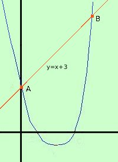

|
trovare le intersezioni fra la parabola y = x2 - 4x + 3 e la retta y = x + 3 devo fare il sistema fra le due curve y = x + 3 sostituisco il valore della y ricavato dalla prima nella seconda equazione; al posto della prima metto una linea x2 - 4x + 3 = x + 3 Conviene sostituire in modo che x2 sia positivo: cosi' non devi cambiare di segno x2 - 5x = 0 risolvo l'equazione di secondo grado: e' un'equazione spuria x2 - 5x = 0 x ( x - 5) = 0 ottengo le due soluzioni x = 0 x = 5 sostituisco il valore 0 in una delle due equazioni del sistema (conviene prendere la piu' semplice) y = x + 3 = 3 Primo punto A=(0, 3) sostituisco il valore 5 in una delle due equazioni del sistema  y = x + 3 = 5 + 3 = 8 Secondo punto B=(5, 8) a destra la rappresentazione grafica |